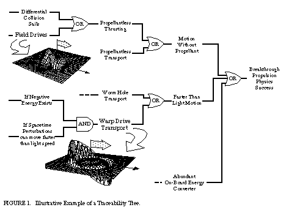

| www.padrak.com/ine/BTPPAPER.html | Nov. 12, 1998 |
BREAKTHROUGH PROPULSION PHYSICS RESEARCH PROGRAM
By Marc G. Millis
NASA Lewis Research Center
Received via email to the INE: May 28, 1997.
Additional related links are given at the end of this file.
BREAKTHROUGH PROPULSION PHYSICS RESEARCH PROGRAM Marc G. Millis NASA Lewis Research Center 21000 Brookpark Rd., Cleveland, OH 44135 (216) 977-7535 marc.millis@lerc.nasa.gov [Received via email to the INE: May 28, 1997] Abstract In 1996, a team of government, university and industry researchers proposed a program to seek the ultimate breakthroughs in space transportation: propulsion that requires no propellant mass, propulsion that can approach and, if possible, circumvent light speed, and breakthrough methods of energy production to power such devices. This Breakthrough Propulsion Physics program, managed by Lewis Research Center, is one part of a comprehensive, long range Advanced Space Transportation Plan managed by Marshall Space Flight Center. Because the breakthrough goals are beyond existing science, a main emphasis of this program is to establish metrics and ground rules to produce near-term credible progress toward these incredible possibilities. An introduction to the emerging scientific possibilities from which such solutions can be sought is also presented. INTRODUCTION In 1996, Marshall Space Flight Center (MSFC) was tasked to formulate a comprehensive strategic plan for developing space propulsion technology for the next 25 years. This "Advanced Space Transportation Plan" spans the nearer-term launcher technologies all the way through seeking the breakthroughs that could revolutionize space travel and enable interstellar voyages. New theories and phenomena have emerged in recent scientific literature that have reawakened consideration that such breakthroughs may be achievable.
To anchor the program in real and tangible terms, the team configured the program to produce near-term, credible, and measurable progress toward determining how and if such breakthroughs can be achieved -- credible progress to incredible possibilities. There is no guarantee that the desired breakthroughs are achievable, but it is possible to produce progress toward a goal without first proving it is achievable. This paper introduces how this program aims to answer these challenges as well as giving a brief introduction to the emerging physics which reawakened interest in these visionary ambitions.
SPECIFYING GOALS AND SCOPE
To focus the program, the first step is to specify what breakthroughs are genuinely required to revolutionize space travel. A NASA precedent for systematically seeking revolutionary capabilities is the "Horizon Mission Methodology" (Anderson 1996). This method forces paradigm shifts beyond extrapolations of existing technologies by using impossible hypothetical mission goals to solicit new solutions. By setting impossible goals, the common practice of limiting visions to extrapolations of existing solutions is prevented. The "impossible" goal used in this exercise is to enable practical interstellar travel. Three major barriers exist to practical interstellar travel; propellant mass, trip time, and propulsion energy. To conquer these hurdles the following three propulsion breakthroughs are sought. These are the goals of the Breakthrough Propulsion Physics program:
(1) Eliminate or dramatically reduce the need for rocket propellant. This implies discovering fundamentally new ways to create motion, presumably by manipulating inertia, gravity, or by any other interactions between matter, fields, and spacetime.
(2) Dramatically reduce trip time to make deep space travel practical. This implies discovering a means to move a vehicle at or near the actual maximum speed limit for motion through space or through the motion of spacetime itself. If possible, this means circumventing the light speed limit.
(3) Discover fundamentally new on-board energy production methods to power propulsion devices. This third goal is included in the program since the first two breakthroughs could require breakthroughs in energy generation to power them, and since the physics underlying the propulsion goals is closely linked to energy physics.
The scope of this program only covers seeking the genuinely needed breakthroughs rather than seeking refinements to existing solutions. As such, existing concepts that are based on firmly established science, such as light sails, magnetic sails, beamed energy, nuclear rockets, and antimatter rockets, are not part of this program. These concepts are being explored in other programs.
SCIENTIFIC FOUNDATIONS
New possibilities have emerged in recent scientific literature that have reawakened interest toward conquering the goals described above. These include theories that suggest that gravity and inertia are electromagnetic side effects of vacuum fluctuations (Haisch 1994 and Puthoff 1989), anomalous experimental evidence suggesting a possible gravity altering affect from spinning superconductors (Podkletnov 1992), theories suggesting that faster-than-light transport may be possible using wormholes (Morris 1988) or using warp drives (Alcubierre 1994), and a theory suggesting that sonoluminescence is evidence of extracting virtual photons from vacuum fluctuation energy (Eberlein 1996). These are in addition to older theories about creating propulsive effects without rockets (Bondi 1957 and Forward 1963).
In addition, there have been workshops (Bennett 1995, Evans 1990, and Landis 1990), recent surveys (Cravens 1990, Forward 1990, and Mead 1989), suggested research approaches (Cramer 1994, Forward 1984 and 1996, and Millis 1996), and even some exploratory experiments (Millis 1995, Schlicher 1995, and Talley 1991) on this subject. And recently, a non-profit society, the Interstellar Propulsion Society, was established to provide a collaborative forum to accelerate advancements toward these goals (Hujsak 1995).
PROGRAM CHALLENGES
Since the scientific principles do not yet exist from which to engineer the technological solutions to these challenges, new scientific principles are sought. Seeking such visionary and application-focused physics is not a usual activity for aerospace institutions, so this program faces both the technical challenge of discovering the desired breakthroughs and the programmatic challenges of how to conduct this work. To answer these challenges, the program will develop the research solicitation and selection criteria and the metrics for quantifying progress to meet the technical and programmatic challenges.
The technical challenges include: (1) focusing emerging theories and experiments to answer NASA’s propulsion needs, (2) finding the shortest path to developing the breakthroughs amidst several, divergent and competing approaches, and (3) balancing the imagination and vision necessary to point the way to breakthroughs with the credible, systematic rigor necessary to make genuine progress.
The programmatic challenges include: (1) advocating such long range research amidst dwindling resources and stiff competition from nearer-term, more conservative programs, (2) creating confidence that research funded today will lead to the necessary breakthroughs, (3) selecting the most promising research tasks from the large number of divergent and competing approaches, and (4) conducting meaningful and credible research economically.
PROGRAM PRIORITIES
To simultaneously focus emerging sciences toward answering the needs of space travel and to provide a programmatic tool for measuring progress and relevance, this program will develop prioritization criteria suitable for breakthrough-seeking research. These criteria help potential researchers to focus their work, and provide NASA with the means to quantify the relative benefit of competing research proposals. Examples of these criteria, which are still evolving, are presented below:
• APPLICABILITY: Research proposals that directly address a propulsive effect are given preference over those addressing basic science or supporting technologies.
• EMPIRICISM: Research proposals for experimental tests are given preference over proposals for analytical or theoretical work. Empiricism is considered to be a more direct indication of physical phenomena and experimental hardware is considered to be closer to becoming technology than pure theory.
• TARGETED GAIN: Research proposals that address large potential improvements in propulsive abilities are given preference over those of lesser potential improvements. This comparison can only be made between concepts that are of similar developmental maturity. Targeted gains include reducing trip time, reducing non-payload vehicle mass, reducing energy requirements, and reducing development cost.
• ACHIEVABILITY: Research proposals whose subjects are closer to becoming a working device are given preference over longer range developments. This comparison can only be made between concepts that are of similar propulsive ability.
• IMPACT: The more likely the research results will be used by others, the higher it is ranked.
Another criteria to be used is a "Traceability Tree." This tree is the reverse of a fault tree (a common tool used in accident risk assessments). Instead of branching out all the ways that a given accident can occur, the Traceability Tree branches out the conceivable paths to reach a propulsion breakthrough, Figure 1. This tool provides a means to measure how a given research task is linked to the end goals of discovering a propulsion breakthrough.

Another philosophy behind the NASA program is to support multiple small tasks rather than a single, larger task. Since the search for breakthrough propulsion physics is at an early stage, there are a large number of divergent and competing approaches. It is still too soon to tell which approaches will provide the shortest path to success. To cover the bases, a diverse program of multiple, small, and short-term projects is preferred.
To balance vision and imagination with credible systematic rigor, the NASA program is open to perspectives that go beyond or appear to contradict conventional theory, with the conditions that (1) the perspectives must be completely consistent with credible empirical evidence, (2) the utility of the alternate perspective must be clearly delineated, and (3) the make-or-break issues must be clearly identified to suggest the next-step research objectives.
There is another facet to this "beyond conventionalism." Institutions such as NASA routinely get numerous unsolicited submissions from individuals who claim to have a breakthrough device or theory. Frequently these submissions are too poorly conceived or incomplete, or too complex to be easily evaluated. To distribute this workload to other credible organizations and to keep an open mind to the possibility that one of these maverick inventors may have actually made a breakthrough, the following approach is suggested. Any individual who thinks they have a breakthrough device or theory is strongly advised to collaborate with a university or other educational institute to conduct a credible test of their claim. The university can propose the test as an educational student project, where the students will learn first-hand about the scientific method and how to apply systematic rigor and open-mindedness in conducting a credible test of an incredible claim. In such collaborations it is suggested that the inventors retain full intellectual property rights to their devices or theories, and that the universities make the proposal and receive all the funds to conduct the student projects. With this procedure, if the device or theory works, then supporting evidence would be established in a credible fashion and the originator would retain the intellectual property rights. If the device or theory does not work, then at least the students would have had a meaningful educational experience, and the concept’s originator can work on another idea.
MEASURING PROGRESS
One of the challenges to this program is to demonstrate that research conducted today is making measurable progress directly toward the long-range targeted breakthroughs. The traceability tree and selection criteria presented earlier provides a means to demonstrate that a given research approach is linked to the end goals, but another metric is needed to quantify that progress is being made. To provide this measure, a more explicit version of the Scientific Method is used for measuring the level of advancement of a given scientific approach, similar to the way that the "Technology Readiness Levels" (Hord 1985) are used for quantifying technological progress. A draft of these scientific readiness levels is below:
• Pre-Science: Suggests a correlation between a desired effect and an existing knowledge base, or reports observations of unexplained anomalous effect.
• Scientific Method Level 1, Problem Formulation: Defines a problem specifically enough to identify the established knowledge base and the remaining knowledge gaps. A "problem" is an explicit statement of a desired goal (e.g. the 3 Breakthrough Propulsion Physics program goals) or explicit observations of an anomalous effect which cannot be explained using the established knowledge base.
• Scientific Method Level 2, Data Collection: Compiles relevant information to address a specific problem by experiment, observation, or mathematical proof.
• Scientific Method Level 3, Hypothesis: Suggests a mathematical representation of an effect or the relation between physical phenomena.
• Scientific Method Level 4, Test Hypothesis: Empirically tests a hypothesis by comparison to observable phenomena or by experiment.
• Technology Readiness Level 1, Basic Principles Observed and Reported: Equivalent to established science, where an effect has been observed, confirmed, and modeled sufficiently to produce a mathematical description of its operation.
• Technology Readiness Level 2, Conceptual Application Designed.
• Technology Readiness Level 3, Conceptual Design Tested Analytically or Experimentally.
STATUS AND DIRECTION
A government steering group containing members from various NASA centers, DOD and DOE laboratories has been established to develop the research solicitation and selection criteria to meet the programmatic and technical challenges. These criteria are to be in place by mid 1997, in time for the next program milestone; a kick-off workshop. The invitation-only workshop will examine the relevant emerging physics and will produce a list of next-step research tasks. If the workshop successfully demonstrates that promising and affordable approaches exist, funding may be granted to begin conducting the step-by-step research that may eventually lead to the breakthroughs.
CONCLUSIONS
New theories and laboratory-scale effects have emerged that provide new approaches to seeking propulsion breakthroughs. To align these emerging possibilities toward answering the propulsion needs of NASA, a research program has been established that focuses on producing near term and credible progress that is traceable to the breakthrough goals.
Acknowledgments
Special thanks is owed to the Product Definition Team who helped shape this program: Team Leader; Marc G. Millis, NASA Lewis Research Center: Team Members: Dana Andrews, Boeing Defense and Space Group; Gregory Benford, University of California, Irvine; Leo Bitteker, Los Alamos National Labs; John Brandenburg, Research Support Instruments; Brice Cassenti, United Technologies Research Center; John Cramer, University of Washington, Seattle; Robert Forward, Forward Unlimited; Robert Frisbee, NASA Jet Propulsion Lab; V.E. Haloulakos, McDonnell Douglas Aerospace; Alan Holt, NASA Johnson Space Flight Center; Joe Howell, NASA Marshall Space Flight Center; Jonathan Hujsak, Interstellar Propulsion Society; Jordin Kare, Lawrence Livermore National Labs; Gregory Matloff, New York University; Franklin Mead Jr., Phillips Labs, Edwards Air Force Base; Gary Polansky, Sandia National Labs; Jag Singh, NASA Langley Research Center; Gerald Smith, Pennsylvania State University; and to the Lewis Research Center volunteers; Michael Binder, Gustav Fralick, Joseph Hemminger, Geoffrey Landis, Gary S. Williamson, Jeffrey Wilson, and Edward Zampino.
References
Alcubierre, M. (1994) "The Warp Drive: Hyper-fast Travel Within General Relativity", Classical and Quantum Gravity, 11:L73-L77.
Anderson, J. L. (1996) "Leaps of the Imagination: Interstellar Flight and the Horizon Mission Methodology," Journal of the British Interplanetary Society, 49:15-20.
Bennett, G., Forward, R. L. and Frisbee, R. (1995) "Report on the NASA/JPL Workshop on Advanced Quantum/Relativity Theory Propulsion" AIAA 95-2599, 31st AIAA/ASME/SAE/ASEE Joint Propulsion Conference.
Bondi, H. (1957) "Negative Mass in General Relativity," Reviews of Modern Physics, 29:423-428.
Cramer J., Forward, R. L., Morris, M., Visser, M., Benford, G. and Landis, G. (1994) "Natural Wormholes as Gravitational Lenses," Physical Review D, 15 March 1995:3124-3127.
Cravens D. L. (1990) "Electric Propulsion Study," Report # AL-TR-89-040, Air Force Astronautics Lab (AFSC), Edwards AFB, CA
Eberlein, C. (1996) "Theory of quantum radiation observed as sonoluminescence," Phys Rev A, 53:2772-2787.
Evans, R. A., ed. (1990) BAe University Round Table on Gravitational Research, Report on Meeting held in Preston UK, March 26-27, 1990, Report # FBS 007, British Aerospace Limited, Preston, Lancashire, UK.
Forward, R. L. (1963) "Guidelines to Antigravity", American Journal of Physics, 31:166-170.
Forward, R. L. (1984) "Extracting Electrical Energy from the Vacuum by Cohesion of Charged Foliated Conductors", Physical Review B, 15 AUG 1984 :1700-1702.
Forward, R. L. (1990) "21st Century Space Propulsion Study," Report # AL-TR-90-030, Air Force Astronautics Lab (AFSC), Edwards AFB, CA.
Forward, R. L. (1996) "Mass Modification Experiment Definition Study," Report # PL-TR-96-3004, Phillips Lab, Edwards AFB, CA
Foster, R. N. (1986) Innovation; The Attacker’s Advantage, Summit Books.
Haisch, B., Rueda, A., and Puthoff, H. E. (1994) "Inertia as a Zero-Point Field Lorentz Force", Physical Review A, 49:678-694.
Hord, R. M. (1985) CRC Handbook of Space Technology: Status and Projections, CRC Press, Inc. Boca Raton, FL.
Hujsak, J. T. and Hujsak, E. (1995) "Interstellar Propulsion Society," Internet address: http://www.tyrian.com/IPS/.
Landis, G. L., ed. (1990) "Vision-21: Space Travel for the Next Millennium" Proceedings, NASA Lewis Research Center, April 3-4 1990, NASA CP 10059, NASA Lewis Research Center.
Mead, F. Jr. (1989) "Exotic Concepts for Future Propulsion and Space Travel", Advanced Propulsion Concepts, 1989 JPM Specialist Session, (JANNAF), CPIA Publication 528:93-99.
Millis, M. G. and Williamson, G. S. (1995) "Experimental Results of Hooper’s Gravity-Electromagnetic Coupling Concept," NASA TM 106963, Lewis Research Center.
Millis, M. G. (1996) "The Challenge to Create the Space Drive", NASA TM 107289, Lewis Research Center.
Morris, M. and Thorne, K. (1988) "Wormholes in Spacetime and Their Use for Interstellar Travel: A Tool for Teaching General Relativity," American Journal of Physics, 56:395-412.
Podkletnov, E. and Nieminen, R. (1992) "A possibility of gravitational force shielding by bulk YBa2 Cu3 O7-x superconductor" Physica, C203:441-444.
Puthoff, H. E. (1989) "Gravity as a zero-point-fluctuation force", Phys Rev A, 39:2333-2342.
Schlicher R. L., Biggs, A. W., and Tedeschi, W. J. (1995) "Mechanical Propulsion From Unsymmetrical Magnetic Induction Fields", AIAA 95-2643, 31st AIAA/ASME/SAE/ASEE Joint Propulsion Conference.
Talley, R. L. (1991) "Twenty First Century Propulsion Concept," Report # PL-TR-91-3009, Phillips Laboratory, Air Force Systems Command, Edwards AFB, CA.
NASA Breakthrough Propulsion Physics Program; Website, Apr. 1998.